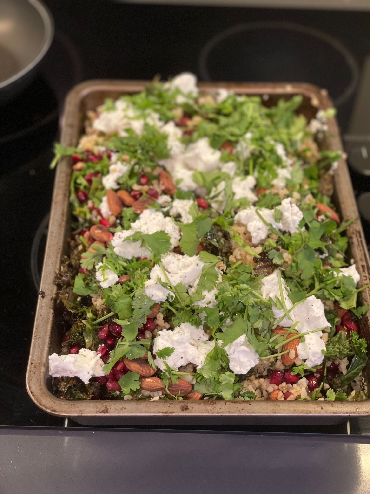

Crispy Kale and Bulgar Wheat Salad

Before you start heat the oven to 200°C fan.
Ingredients
To serve
Method
- Preheat the oven to 200°C fan.
- Mix the 200g bulgur wheat, 5cm ginger root, zest of 2 lemons, sea salt, and 400ml boiling water in a roasting tin.
- Toss the 200g kale with the olive oil and tip evenly over the bulgur wheat.
- Transfer to the oven and roast for 15 minutes.
- Whisk together the 1 heaped tbsp za'atar, 1 tbsp lemon juice, and 1 tbsp extra virgin olive oil and set aside.
- Mix the cooked bulgur wheat and the crispy kale with the dressing.
- Scatter over the 100g goat's cheese, 50g almonds, pomegranate seeds, and coriander.
- Serve hot with the yoghurt alongside.